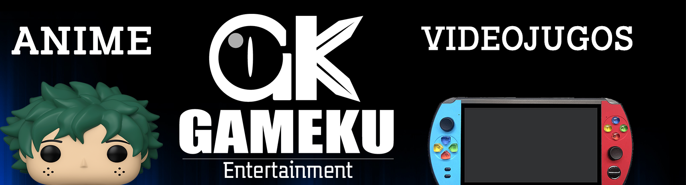

Gameku es una empresa enfoncada solo para videojuegos y animes para que ofrecer un mejor servicio para nuestros clientes dandonles los mejores productos con los mejores precios para nuestros clientes, tambien tratamos de conseguir accesorios para nuestros cosplayer,gamers,otakus y fanaticos de animes. Asi poder traer los mejores productos traidos desde Japon como tambien brindamos una mejor asesoria a las personas que son aficionados a estos medios de entretenimiento y alas que son nuevos o novatos que empiezan con los animes y los videos . Desde que fuimos niños siempre nos facinaba un mundo nuevo lleno de colores, creatividad , diversion , euforia tambien otros motivos para ver animes o jugar videojuegos. Lo importante es seguir apoyando los animes y videojuegos que dan tantos gustos alas personas que aman un mundo nuevo en el anime y es por esa razon que se creo Gameku Enternainment para seguir continuando un mejor futuro para nuestros jovenes, adultos y ancianos porque estamos para ofrecer la diversion los medios de entrentener alas personas que aman estas aficiones no cualquiera le puedan gustar un anime de los 80 o los nuevos animes que salen, lo mismo pasa en los videojuegos pocos juegan alos videojuegos solo los jovenes pero nuestra intencion en seguir ofreciendo productos alos adultos o ancianos que quieren entrar en el mundo de los videjuegos asi poder estamos seguros de que vamos seguir contunuando dando frutos en las siguentes generaciones Gameku Entertainment es una empresa seria con objectos serios para tratar de traer los mejores productos de Japon asi poder apoyando los gustos, las ideas hay que seguir motivando alas personas que sigan gustando los animes y los videojuegos.
Dandoles un mejor servicio para nuestros clientes
Gameku Entertainment tiene la mision de brindar los mejores productos y servicios para los clientes. ya sean fanaticos de anime o videojuegos para que queden sastifechos de los servicios que la empresa esta dando asus clientes, seguir motivando alos niños, alos jovenes, alos adolencentes seguir brindando los gustos de ver animes que no solo los mas populares sino tambien animes clasicos, animes desconocidos, animes nuevos y emision. los videojuegos tambien es una idea que muchos gamers quiene sentir nuevos retos, nuevos graficos, nuevas consolas, nuevos pc gaming, los streamings desean nuevos retos tambien y mejores contenidos que quieren consumir asi poder disfrutar de los videojuegos que desean jugar es algo nuevo y unics que todos queremos dar por esa razon se creo esta empresa para ser uno de los mejores para ofrecer calidad, buen servicio, buenos frustos y tambien dar los mejor en todos los aspectos yo tambien deseo que los niños y los jovenes disfruten del anime que cualquiera puede desear por eso no hay que dejar que los gustos se mueren porque digan que anime o los videjuegos son solo hobby pero no tambien es parte de nuestras vidas nos enseñan muchas cosas por eso Gameku Entertainment tienen el deseo de apoyar ala juventud para las siguentes generaciones de seguir apoyando asi poder continuar para que el futuro de anime y los videojuegos queda asegurado
Gameku Entertainment busca para el año 2030 sea una empresa consolidada en la cuidad de medellin en todos los centros comerciales teniendo en cada local y en cada centros comercial incluso tener una sede grande para Gameku sea una empresa sea reconocida ofreciendo los mejores productos que pueda tener asi consiguendo los productos importandos en japon para que los colombianos o los latinomaricanos puedan conseguir los productos mas faciles desde tu casa tambien la idea es enviar productos por medio de drones asi poder continuar con los servicios en las siguentes generaciones para que sea mas comodo asi tener convenios con cruchyroll o netflix tambien otras plataformas de anime o videojuegos que tengas cuentas que seas importadas para que los colombianos puedan desear los mejores servicios en el ambito del anime o los videojuegos para que puedan disfrutar de los mejor y eso que no termina la idead es seguir ofreciendo los nuevos productos que vienen en el anime y los videojuegos ya formar una gran alianza con Japon para que podamos traer los productos para que nuestros niños,jovenes,adolecentes, adultos y ancianos puedan continuar seguir amando el anime y los videojuegos sin importar las edades sin importar de que departamento o pais eres porque vamos a internacionalizar la empresa mas grande para que sea uno de los mejores empresas en brindar animes y videojuegos para todos espero que asi sea para las siguentes generaciones


Gameku Entertainment se creo con la idea de Mateo Sarmiento de demostrar la idea de que los videojuegos y los animes se pueda disfrutar en los niños,adolecentes,jovenes,Adultos Y Adultos
Ya desde pequeño hubieron muchos de nosotros vimos un anime o hemos un jugado un videojuegos desde que eramos niños jugaban en las maquinas en la salas de juegos o en los centros comericiales para que muchos formaban competencia sana entre la juventud.
Los animes tambien se formo de nuestra infancia ya que desde niños hemos vistos animes que nos han enamorado como Dragon ball,Naruto,Sailor Moon,Bleach y otros animes que nos hemos entretenido desde la epoca de los 90 muchos se han fijado el anime como un metodo creativo, nuevo, moderno,unico ya que tenia cosas interesantes que mostraban que de las caricaturas obvio que tambien nos hemos visto buenas series desde que eramos chicos pero aun asi el anime es algo que muchos enamoran por la forma de dibujo por la forma de como expresan de como muestran esa sonrisa la verdad los japoneses hicieron algo de que muchos se enamoraron la forma de como dibujan, de como animan y mas con los efectos especiales de que tanto se formaban no es nuevo pero si es mordeno y es unico por eso Mateo Sarmiento se fijo de este estilo
pregunto a sus hermanos que era eso, le contaron que es anime una nueva forma unica en los japonenes que animaron las chicas y los chicos. Cosa que no se algo nuevo todos los dias ademas tienen historias interesantes unicas y decidio investigar como es el anime como se creo como se desarrollo como evolucion es algo increible que avanza el tiempo el anime tuvo muchas mejoras en la animacion por esa razon muchos decidieron ver el anime como una nueva forma de seguir el ejemplo de los japonenes y es algo unico y nuevo que muchos esperan ver Mateo Sarmiento estudio mucho en este arte miro muchos animes, tambien leyo mangas, tambien miro como es la cultura japonesa bueno por eso se volvio tan fanatico del anime.
Los videojuegos a Mateo Sarmiento se fijo mucho de como es la tecnologia de como evoluciono en los videjuegos es que desde que su primer consola era una Super Nintendo algo nuevo que estaba en su juventud por eso se enamoro de los videojuegos era algo nuevo que no se esperaba le gustaba la forma de la jugabilidad tambien le gusto la forma de los graficos era algo que entretenia mucho, los videojuegos ayudaba a que le daba mas creatividad jugar la manera expotencial unica e divertida es que desde que jugo Super Mario World empezo su amor por los videojuegos desde empezo tener varias consolas para probar como son los juegos que avazaban su tiempo descubrio muchas cosas que le gustaba le gusta los juegos de pelea los juegos de accion los juegos de carreras, aun asi no dejo el amor por los videjuegos sino que tambien empezo descubrir quien fue el que creo los videojuegos,¿cuales fueron sus origenes tambien decidio enfoncarse en las graficas en la jugababilidad creame que se fijo demasiado por la play station otra consola que le gusto demasiado su catalogo de videojuegos hay que admitir que tuvo su epoca dorada pero con al pasar de los tiempo jugaba demasiado videojuegos, tambien tuvo su primera Xbox algo que le gustaba ya que los juegos eran muy 3d y se desarrollaban de una manera increible. Por eso decidio coleccionar consolas y tambien nuevas forma de jugar videojuegos ya sea en consolas, pc y celulares o tablet y ademas de seguir investigando como los videjuegos han evolucionado de una forma increible con al pasar de los años
Por eso Mateo formo la empresa con la ayuda de unos amigos asi poder crear una empresa pequeña no es grande pero si se enfondo en tener 2 gustos unicos y diferentes se enfonco en crear una empresa unica con estilo creativo para eso decidio crear un nombre llamado Gameku una mezcla entre Otaku y Gamer 2 gustos que ayudo tener al idea de tener una empresa para formar una mision contagiar ese gustos por los animes y los videojuegos.